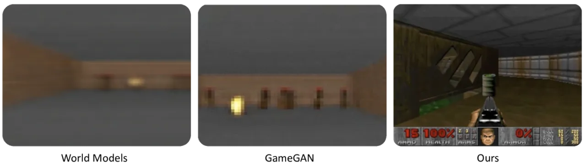
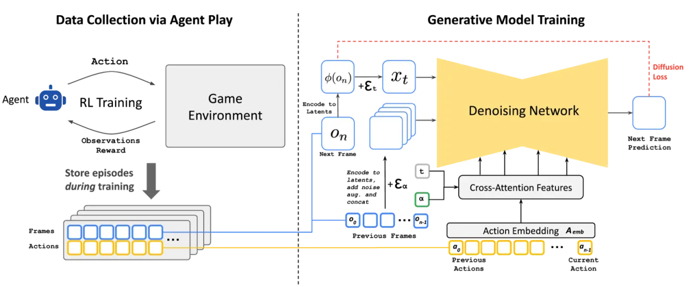
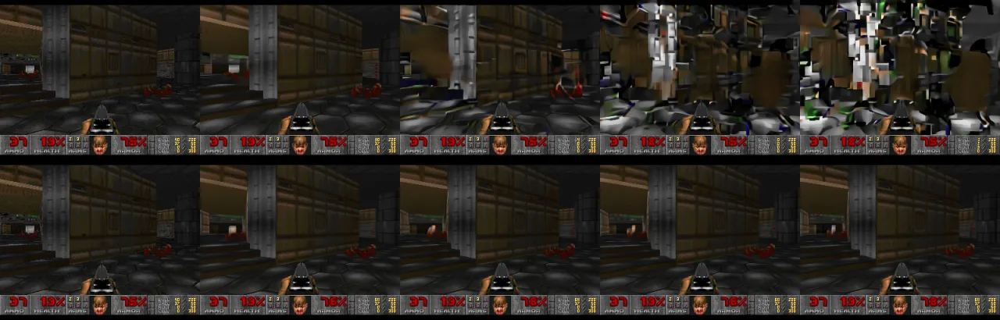
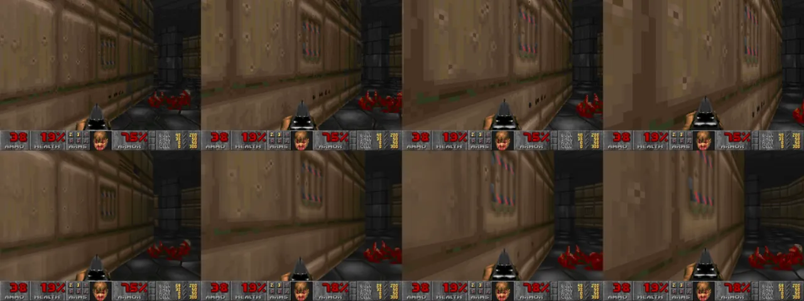
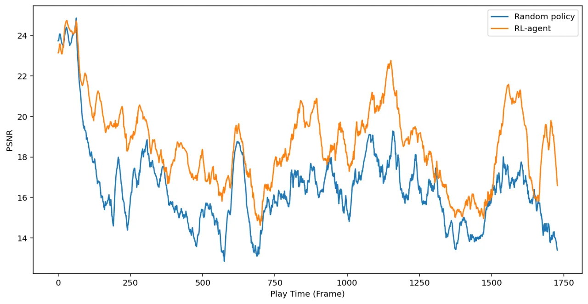

GameNGen 是史上第一个完全由神经模型驱动的游戏引擎，以单块 TPU 实现 20 FPS 的实时互动游玩。 该系统以经典射击游戏 DOOM 为实验平台：先用强化学习智能体收集游戏轨迹数据，再训练扩散模型进行下一帧预测。 在人类评估中，短片段的真假辨别率仅略高于随机水平，而经历 5–10 分钟游玩后更下降至随机猜测水平（50%）。
传统游戏引擎依赖大量手工编写的规则和渲染管线，开发成本极高。 随着生成模型能力的飞速提升，一个自然的问题随之浮现： 神经网络能否取代传统游戏引擎，直接从数据中学会模拟复杂的交互式环境？ 此前的探索（如 World Models、GameGAN）已展现出可能性，但均无法支持实时互动游玩，也难以保持长时序的视觉一致性。
"We present GameNGen, the first game engine powered entirely by a neural model that enables real-time interaction with a complex environment over long trajectories at high quality."

GameNGen 分两个阶段训练：第一阶段，训练一个强化学习（PPO）智能体玩 DOOM 并录制全程轨迹作为数据集； 第二阶段，在 Stable Diffusion v1.4 基础上微调扩散模型，以历史帧序列和动作序列为条件生成下一帧， 配合 noise augmentation（噪声增广）和解码器微调来保证长时序稳定性。

采用 PPO 算法训练智能体，共执行 5000 万个环境步骤。 智能体在训练和评估过程中的全部动作与观测均被保存，形成包含 7000 万条轨迹的训练集。 使用智能体（而非随机策略）收集数据的好处在于：智能体会主动探索游戏中的难关和过场，使训练数据分布更接近人类玩法。 消融实验显示，在中等难度关卡中，智能体数据训练的模型在 3 秒自回归生成后 PSNR 为 20.21， 而随机策略仅为 16.50。
以 Stable Diffusion v1.4 为主干，将文本条件替换为动作嵌入（用 cross-attention 注入）， 并将编码后的历史帧拼接至去噪 latent 的通道维度。具体设计要点如下：

模型在 128 块 TPU-v5e 上训练 70 万步，batch size 128（U-Net）和 2048（解码器）， 使用 Adafactor 优化器，学习率 2e-5，常数调度。 输入分辨率为 320×240，padding 至 320×256，损失函数采用 velocity parameterization。
实验在 DOOM（ViZDoom 框架）上展开，评估指标涵盖图像质量（PSNR、LPIPS）、视频质量（FVD）以及人类辨别测试。 基线包括 World Models 和 GameGAN（但数据集不同，不可直接对比）。 推理硬件为单块 TPU-v5。
| 指标 | GameNGen（4步采样） | 参照基准 |
|---|---|---|
| PSNR ↑ | 29.43 | lossy JPEG (quality 20–30) |
| LPIPS ↓ | 0.249 | — |
| 采样步数 | PSNR ↑ | LPIPS ↓ |
|---|---|---|
| 1步 | 25.47±0.098 | 0.255±0.002 |
| 2步 | 31.91±0.104 | 0.205±0.002 |
| 4步（部署） | 32.58±0.108 | 0.198±0.002 |
| 8步 | 32.55±0.110 | 0.196±0.002 |
| 64步 | 32.19±0.110 | 0.197±0.002 |
4步采样的质量已逼近 64 步，是速度与质量的最优折中。
| 时长 | FVD ↓ |
|---|---|
| 16 帧（0.8 秒） | 114.02 |
| 32 帧（1.6 秒） | 186.23 |
使用 10 名评估者，共 130 个随机片段，对不同时长的真实游戏与 GameNGen 生成画面进行辨别。
| 片段时长 | 人类选择真实游戏的比例 |
|---|---|
| 1.6 秒 | 58% |
| 3.2 秒 | 60% |
| 5–10 分钟游玩后 | 50%（随机水平） |
即便面对数分钟的完整游玩录像，人类仍无法可靠地区分真实与生成内容， 充分证明 GameNGen 在视觉保真度方面已达到令人信服的水平。

| 难度 | 策略 | PSNR ↑ | LPIPS ↓ |
|---|---|---|---|
| Easy | Agent | 20.94±0.76 | 0.48±0.01 |
| Easy | Random | 20.20±0.83 | 0.48±0.01 |
| Medium | Agent | 20.21±0.36 | 0.50±0.01 |
| Medium | Random | 16.50±0.41 | 0.59±0.01 |
| Hard | Agent | 17.51±0.35 | 0.60±0.01 |
| Hard | Random | 15.39±0.43 | 0.61±0.00 |
在中等和高难度关卡中，以强化学习智能体数据训练的模型显著优于随机策略数据， 说明高质量、覆盖全面的数据对模型泛化至关重要。

模型仅能访问约 3.2 秒的历史上下文（64 帧），而真实游戏状态可能需要更长的记忆才能维持一致性。 作者指出："The model only has access to a little over 3 seconds of history"， 模型极可能依赖强启发式来弥补，但在需要长期记忆的场景（如打开过的门、拾起的物品）中可能出现错误。
智能体在训练中并未探索游戏的所有关卡、位置和交互，导致模型在这些未见过的场景中可能产生错误行为。 作者明确表示："the trained agent does not explore all of the game's locations and interactions, leading to erroneous behavior in those cases."
现阶段 GameNGen 是针对特定游戏（DOOM）的模拟器，无法像传统游戏引擎那样用于开发全新游戏内容。 作者坦言："We are not able to easily produce new games with GameNGen"， 这意味着其应用场景目前仍局限于已有游戏的模拟与研究。